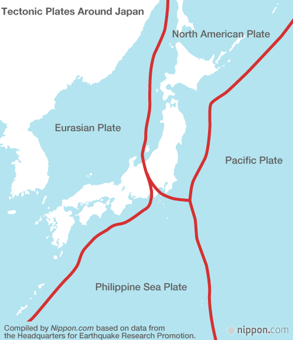
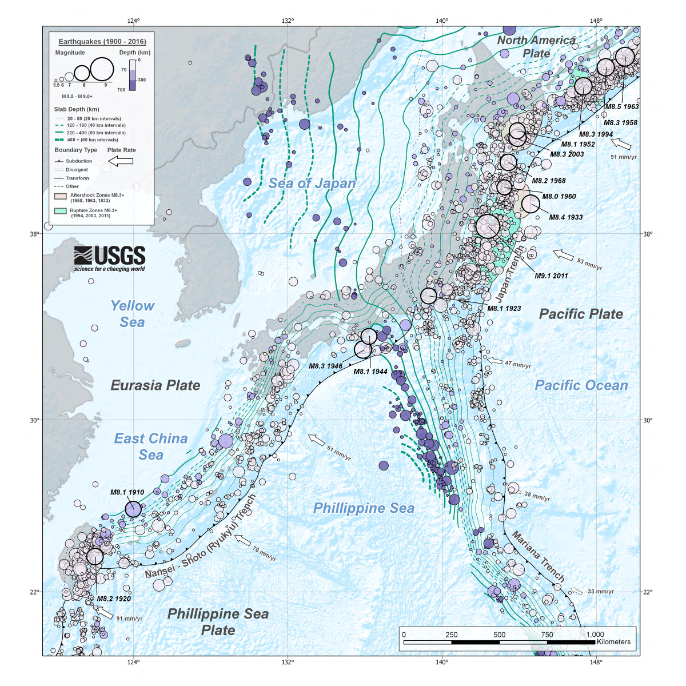
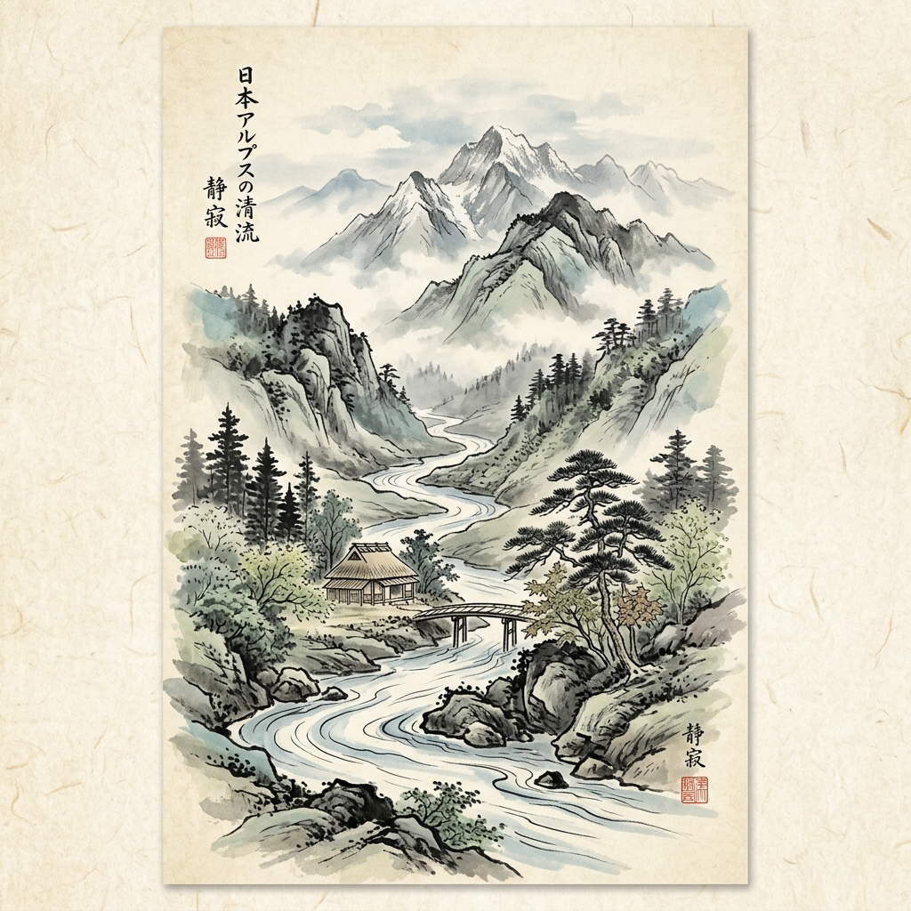

Tectonic Plates and Natural Disasters
Japan and the Pacific Ring of Fire
Japan is located along the Pacific Ring of Fire, which is one of the most tectonically active regions in the world. Instead of sitting on one stable tectonic plate, Japan is located near several plate boundaries that are constantly moving. Because of this, earthquakes, volcanoes, and tsunamis are a normal part of life in Japan. I think Japan’s geography is really interesting because these tectonic movements have shaped not only the landscape, but also the way people live, build cities, and prepare for disasters.
The Four Plates
The four major tectonic plates connected to Japan are:
- Pacific Plate: located east of Japan and moving westward beneath northern Japan.
- Philippine Sea Plate: located south of Japan and moving underneath southwestern Japan.
- Eurasian Plate: located beneath western Japan.
- North American Plate (Okhotsk Plate): connected to northeastern Japan and Hokkaido.
Natural Disasters in Japan
Because Japan is located near these tectonic plate boundaries, natural disasters happen frequently throughout the country. Earthquakes are especially common, and some large earthquakes can also cause tsunamis. One important example is the 2011 Tohoku Earthquake and Tsunami, which caused major damage in northeastern Japan. Japan also has many active volcanoes, including Mount Fuji and Sakurajima. Growing up in Japan, earthquake preparedness is something people learn from a young age. Earthquake drills, emergency alerts, and disaster prevention systems are a normal part of daily life, and many buildings in Japan are designed to better resist earthquakes.

Rock and Mineral Resources
Japan does not have large amounts of natural mineral resources compared to countries like Australia or China, so the country depends heavily on imported raw materials. However, some important domestic resources such as limestone, silica stone, and geothermal energy still support construction, manufacturing, and technology industries across the country. Because Japan is highly industrialized, mineral resources are closely connected to trade, transportation, jobs, and economic development.
Domestic Mining & Resource Management
Even though Japan imports many minerals, some important domestic resources are still found in different parts of the country. Limestone is especially important because it is used for cement, roads, buildings, and other infrastructure. Japan also produces silica stone for glass and industrial materials. In Kagoshima Prefecture, the Hishikari Mine is known for producing high-quality gold. Even though Japan does not have many active metal mines today, these resources still support local economies and jobs.
Imports, Trade, and Industry
Because Japan does not have enough iron ore, coal, copper, or oil inside the country, many of these resources are imported from overseas. These imported materials are important for Japan’s automobile, electronics, and steel industries. I think this shows how geography influences Japan’s economy. Since Japan is an island country with limited natural resources, international trade and shipping routes became very important for the country’s development.
Urban Mining & Recycling
One interesting thing I learned is that Japan is also known for “urban mining.” Instead of only relying on natural mines, Japan recovers valuable metals like gold, silver, lithium, and copper from old electronics such as phones, computers, and batteries. This helps reduce waste while also supporting technology industries. I think this reflects how Japan tries to use resources carefully and efficiently.
Environmental & Economic Impacts
Mining and resource development can also create environmental challenges. Old mines sometimes caused pollution in rivers and nearby ecosystems, so the government now focuses more on environmental restoration and safety management. At the same time, mineral resources still play an important role in construction, transportation, manufacturing, and energy production across Japan.
Because Japan has limited natural mineral resources, the country relies heavily on international trade and imported raw materials to support its industries and economy.
Earthquakes
Earthquakes in Japan
Japan experiences frequent earthquakes because the country is located near several tectonic plate boundaries along the Pacific Ring of Fire. Earthquakes are a part of everyday life in Japan, and they have influenced architecture, transportation systems, emergency planning, and even daily routines. Growing up in Japan, earthquake drills and emergency preparation were very normal to me. This made me realize how strongly geography affects daily life and society in Japan.
Historical Earthquakes:
- Great East Japan Earthquake (2011): The 2011 Great East Japan Earthquake was one of the most devastating natural disasters in modern Japanese history. The magnitude 9.0 earthquake triggered a massive tsunami that caused severe destruction across the Tohoku region, especially in Miyagi, Iwate, and Fukushima Prefectures. Because I am from Sendai Miyagi, I can still remember this event vividly. I still remember the shaking of the earthquake, the tsunami warnings, transportation and lifeline shutdowns, and the long recovery process after the earthquake.
- Great Hanshin Earthquake (1995): The Great Hanshin Earthquake struck Kobe in 1995 with a magnitude of 6.9. The earthquake caused major damage to roads, buildings, and transportation systems, and more than 6,000 people lost their lives. After this disaster, Japan improved building standards, emergency response systems, and disaster preparation programs throughout the country.
Earthquake Preparedness
The Japanese government uses many different systems to help citizens prepare for earthquakes. Japan has strict earthquake-resistant building codes, nationwide emergency drills, tsunami evacuation systems, and an advanced Earthquake Early Warning system that sends alerts through phones, television, trains, and public speakers. Schools and workplaces also regularly practice evacuation drills. Because earthquakes happen frequently, disaster preparedness is treated as an important part of daily life in Japan.

Orogeny & Hydrology: The Mountain Ranges
The Rugged Spine of Japan
Over 70% of Japan's landmass is mountainous. These mountains are created by orogeny—the folding, faulting, and uplifting of the Earth's crust as the Pacific and Philippine Sea plates compress the margins of the continental plates. The central spine of Honshu is dominated by the Japanese Alps, which are split into three ranges: the Northern Hida, Central Kiso, and Southern Akaishi Mountains. The highest non-volcanic peak is Mount Kita at 3,193 meters.
Climatic and Weather Impacts:
The mountain ranges act as an atmospheric shield. In winter, cold Siberian winds sweep across the Sea of Japan, picking up moisture. When this air hits the steep slopes of the Japanese Alps, it is forced upward (orographic lift), cools, and precipitates as massive amounts of heavy snow on the western side of Honshu, creating the famous "snow country" (Yukiguni). Conversely, the eastern Pacific coast (including Tokyo) lies in the rain shadow, enjoying clear, dry winters.
Hydrologic and Cultural Roles:
Because Japan's landmass is narrow, the high peaks give rise to steep, rapid rivers (such as the Shinano River and Tone River) that flow swiftly to the coast. These rivers supply critical fresh water and spring snowmelt to irrigate rice paddies in the lowlands, and support hydroelectric power stations. However, they drain so rapidly that storing water is difficult, and heavy rains from summer typhoons frequently cause severe flash floods.
Culturally, mountains have long been revered as sacred interfaces between heaven and earth. Under Shinto and Buddhist syncretism, mountains became centers for Sangaku Shinkō (mountain worship) and Shugendō—a practice of mountain asceticism where practitioners (yamabushi) undergo physical and mental tests in the wild. Historically, this rugged terrain also divided Japan into isolated feudal domains (han), protecting regions from easy invasion but making land-based trade extremely difficult, forcing merchants to rely on coastal shipping routes. Today, advanced engineering projects like the Kan-etsu Tunnel and bullet train (Shinkansen) tunnels pierce through these ranges to unify the national economy.

Earth's Crust: Mineral Resources & Economic Trade
Industrial Mineral Mining & Resource Dependency
Geologically, Japan is resource-poor regarding metallic mineral ores. During its post-war industrial expansion, domestic mining of metals like iron, copper, lead, and zinc was phased out due to resource depletion and high labor costs. Today, Japan imports nearly 100% of its metallic raw materials to support its heavy manufacturing, automotive, and electronics sectors.
Domestic Mining & Resource Management:
Despite this dependency, there are notable domestic exceptions in Japan's rock and mineral profile:
- Limestone & Silica: Japan is 100% self-sufficient in limestone, mined from massive open-cast quarries such as Torigatayama in Kochi Prefecture. Limestone and silica stone are the primary inputs for Japan's massive cement and concrete industries.
- Hishikari Gold Mine: Located in Kagoshima and operated by Sumitomo Metal Mining, this is the only major metal mine operating in Japan. It is internationally renowned for its exceptionally high ore grade, yielding 20–40 grams of gold per tonne of rock—about eight times the global mining average.
- Urban Mining (E-Waste Recycling): Japan is a pioneer in recovering critical metals (such as gold, silver, copper, and lithium) from recycled consumer electronics. This "urban mine" supplies a substantial portion of the high-tech sector's raw material needs and supports circular economy jobs.
Environmental and Geopolitical Impacts:
Domestic mining has left an environmental legacy: over 5,000 closed or inactive mines exist across the country. The government agency JOGMEC manages ongoing remediation, such as treating acid mine drainage to prevent heavy metals from polluting local river systems. Meanwhile, to secure critical minerals for electric vehicle batteries, Japan is exploring deep-sea mining of hydrothermal deposits and cobalt crusts in its deep Pacific Exclusive Economic Zone (EEZ). However, marine biologists warn that seafloor mining could release toxic sediment plumes, destroy fragile deep-sea ecosystems, and disrupt unique benthic habitats, highlighting a critical tension between energy security and ocean conservation.
Note: To overcome high metallic import dependency, Japan relies on strategic stockpiling and extensive "urban mining" of electronic scrap.
References & Sources
- Geospatial Information Authority of Japan. (n.d.). Typical landforms in Japan: Mountain ranges and volcanic features. Ministry of Land, Infrastructure, Transport and Tourism. https://www.gsi.go.jp/kikaku/tenkei_top.html
- Japan Meteorological Agency. (2021). Earthquake Early Warning System and J-Alert integration. Ministry of Land, Infrastructure, Transport and Tourism. https://www.jma.go.jp/jma/en/Activities/eew.html
- Japan Organization for Metals and Energy Security (JOGMEC). (2023). Environmental management of closed mines and critical metal exploration. https://www.jogmec.go.jp/english/
- Sumitomo Metal Mining Co., Ltd. (2022). Geology and high-grade gold mineralization of the Hishikari Mine. https://www.smm.co.jp/en/corp/business/mineral/hishikari/
- U.S. Geological Survey. (2018). Tectonic summary of the Japanese archipelago and subduction zones. USGS Earthquake Hazards Program. https://earthquake.usgs.gov/earthquakes/byregion/japan.php